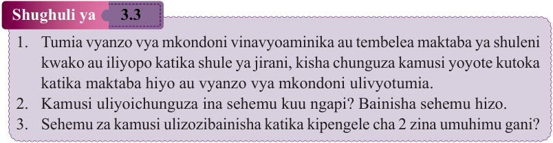
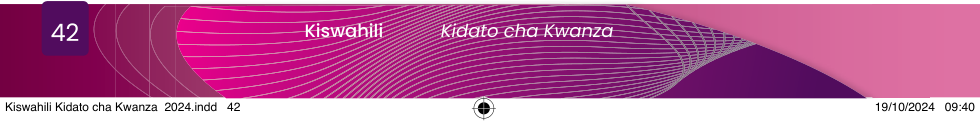

Shughuli ya 3.3
1. Tumia vyanzo vya mkondoni vinavyoaminika au tembelea maktaba ya shuleni kwako au iliyopo katika shule ya jirani, kisha chunguza kamusi yoyote kutoka katika maktaba hiyo au vyanzo vya mkondoni ulivyotumia.
2. Kamusi uliyoichunguza ina sehemu kuu ngapi?
Bainisha sehemu hizo.
3. Sehemu za kamusi ulizozibainisha katika kipengele cha 2 zina umuhimu gani?
Pia, kamusi ina sehemu ya kiini, yaani maneno na ufafanuzi wake. Kiini huwa na maneno mbalimbali yaliyopangwa kialfabeti pamoja na maana zake na taarifa nyingine zinazohusu maneno hayo. Taarifa hizo ni pamoja na asili ya neno linalohusika, kisawe cha neno hilo, kategoria/aina yake, wingi au umoja wake, matamshi yake pamoja na taarifa nyingine zinazoweza kutolewa kama zinavyoonekana katika Kielelezo Na 3.1 kilichopo ukurasa wa 38.
Sehemu ya mwisho katika kamusi huwa na taarifa mbalimbali kama vile sehemu za mwili wa mwanadamu, michoro ya mavazi, samaki, wanyama, wadudu, mimea, matunda, vyombo vya usafiri, ala za muziki, zana za kazi, viambishi vya maneno, majina ya nchi na vingine vingi. Tazama mfano katika Kielelezo Na. 3.3 kilichopo ukurasa wa 41.
Kutumia taarifa za kamusi katika mawasiliano

Ghani shairi lifuatalo la ‘Ndege wangu nampenda’, kisha jibu maswali yanayofuata.
Mhariri mchapaji, niweke japo pembeni,
Niwaeleze walaji, walao ndege porini,
Ndege wangu mjuaji, mgumu hapatikani,
Nampenda ndege wangu, sababu kanipa tabu.
Ndege nahangaikia, huku na kule porini,
Naye kanidengulia, nikawa nipo tabuni,
Wengi nikawatumia, mafanikio sioni,
Nampenda ndege wangu, sababu kanipa tabu.
Wa kwanza nikamtuma, jinale ndiye Mwazani,
Amshike kwa mtama, hata kama mtegoni,
Mwazani akachutama, hakumtia kapuni,
Nampenda ndege wangu, sababu kanipa tabu.
